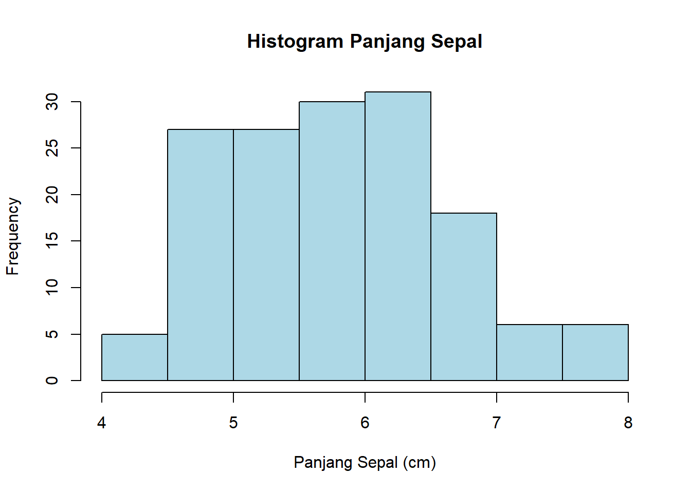
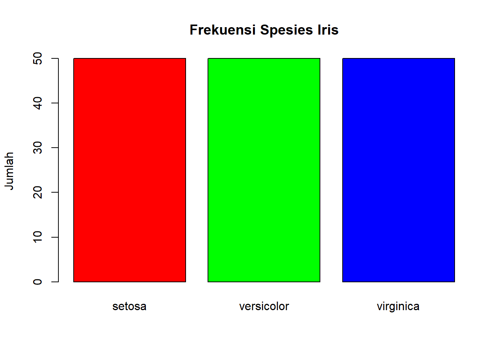
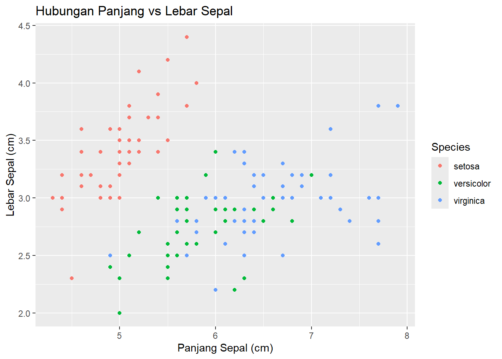
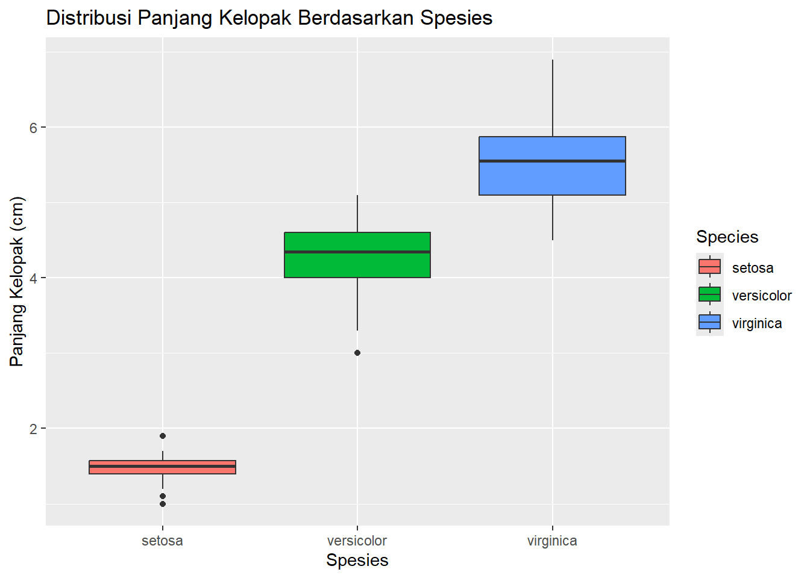

Setelah menyelesaikan modul ini, mahasiswa diharapkan mampu:
1. Melakukan Operasi Dasar dan Eksplorasi Data di R
Melakukan operasi aritmatika dan manajemen variabel dasar.
Mengimpor data (CSV/Excel) dan memahami struktur data frame.
Menghitung statistik deskriptif (mean, median, variansi, dll.)
Membuat visualisasi frekuensi dasar (histogram, bar plot).
2. Membuat Visualisasi Data Lanjutan dengan ggplot2
Memahami konsep Grammar of Graphics (aesthetic, geometry).
Membuat scatter plot untuk menganalisis hubungan antar variabel.
Membuat boxplot untuk membandingkan distribusi data antar grup.
3. Memahami dan Mensimulasikan Distribusi Probabilitas Diskrit
Memahami konsep PMF dan CDF untuk variabel acak diskrit.
Menggunakan fungsi d..., p..., q..., r... untuk Distribusi Binomial.
Menggunakan fungsi terkait untuk Distribusi Poisson.
4. Memahami dan Menerapkan Distribusi Probabilitas Kontinu
Memahami konsep PDF dan CDF untuk variabel acak kontinu.
Menggunakan fungsi dnorm, pnorm, qnorm, rnorm untuk Distribusi Normal.
Menerapkan konsep Distribusi Normal untuk menganalisis data riil (Studi Kasus Iris).
Skenario: Junior Data Analyst
Bayangkan Anda baru saja memulai karir sebagai Junior Data Analyst di sebuah lembaga penelitian botani terkemuka. Pada tugas pertama, anda diminta untuk menganalisis dataset iris. Dataset ini berisi data pengukuran dari tiga spesies bunga Iris (setosa, versicolor, dan virginica).
Menejer Anda tidak hanya ingin laporan deskriptif. Beliau ingin tahu apakah kita bisa memodelkan data ini untuk membuat prediksi.
Dalam modul ini, kita akan menempuh perjalanan lengkap seorang analis data. Kita akan mulai dengan tools kita (R), membersihkan dan memahami data, membuat visualisasi yang menceritakan sebuah kisah, hingga akhirnya membangun model probabilitas sederhana untuk memprediksi temuan di masa depan.
Siapkan RStudio Anda. Mari kita mulai!
Bagian 1. Review R dan Eksplorasi Data
Sebagai analis data, tool utama kita adalah R. Mari kita “panaskan mesin” dengan beberapa operasi dasar. Ini adalah fondasi dari semua skrip kompleks yang akan kita tulis nanti.
1.1: Operasi Dasar R
R bisa kita gunakan sebagai kalkulator canggih. Kita menggunakan <- untuk menyimpan nilai ke dalam sebuah objek atau variabel.
# Aritmatika dasar5+10
[1] 15
12/4
[1] 3
# Menyimpan variabelpanjang <-10lebar <-5luas <- panjang * lebarprint(luas) # Menampilkan isi variabel 'luas'
[1] 50
# Membuat vektor (kumpulan data) dengan c()vektor_angka <-c(1, 2, 3, 4, 5)
1.2: Memuat dan Memeriksa Data
Data kita sudah siap di dalam R. Mari kita panggil dataset iris dan lakukan “interogasi” pertama untuk memahami apa yang kita hadapi.
# Memuat data built-indata("iris")# Cara terbaik melihat data adalah dengan View() di RStudioView(iris)# Melihat struktur data: tipe kolom, jumlah datastr(iris)
Sepal.Length Sepal.Width Petal.Length Petal.Width
Min. :4.300 Min. :2.000 Min. :1.000 Min. :0.100
1st Qu.:5.100 1st Qu.:2.800 1st Qu.:1.600 1st Qu.:0.300
Median :5.800 Median :3.000 Median :4.350 Median :1.300
Mean :5.843 Mean :3.057 Mean :3.758 Mean :1.199
3rd Qu.:6.400 3rd Qu.:3.300 3rd Qu.:5.100 3rd Qu.:1.800
Max. :7.900 Max. :4.400 Max. :6.900 Max. :2.500
Species
setosa :50
versicolor:50
virginica :50
Perhatikan summary()! Ini adalah perintah favorit analis data. Dalam satu detik, kita bisa melihat nilai minimum, maksimum, rata-rata (Mean), dan median (Median) untuk setiap pengukuran. Kita juga bisa melihat ada 50 data untuk tiap spesies. Data kita terlihat balance.
1.3: Statistik Deskriptif
Ringkasan tadi bagus, tapi terkadang kita butuh angka spesifik untuk laporan. Mari kita bedah variabel Sepal.Length (Panjang Sepal) menggunakan $ untuk mengakses kolom.
# Menghitung standar deviasi (akar dari variansi)sd(panjang_sepal)
[1] 0.8280661
1.4: Visualisasi Frekuensi (Base R)
Angka itu penting, tapi gambar bernilai ribuan kata. Sebelum kita pakai tools canggih, kita gunakan plot bawaan R untuk melihat distribusi data kita dengan cepat.
# Histogram untuk melihat distribusi Sepal.Lengthhist(iris$Sepal.Length,main ="Histogram Panjang Sepal",xlab ="Panjang Sepal (cm)",col ="lightblue")

Histogram ini menunjukkan kepada kita sebaran data. Kita bisa lihat puncaknya ada di sekitar 5.5 - 6.0 cm.
# Bar plot untuk melihat frekuensi tiap spesies# Kita perlu membuat tabel frekuensi dulufreq_spesies <-table(iris$Species)barplot(freq_spesies,main ="Frekuensi Spesies Iris",ylab ="Jumlah",col =c("red", "green", "blue"))

Seperti yang kita lihat di summary(), datanya balance. Masing-masing 50.
Bagian 2: Visualisasi Data dengan ggplot2
Sekarang, mari kita naik level. Plot base R bagus untuk analisis cepat, tapi ggplot2 adalah standar industri untuk membuat visualisasi yang informatif dan profesional. Ini yang akan kita masukkan ke laporan untuk penyelia kita.
2.1: Filosofi ggplot2
ggplot2 bekerja seperti menumpuk lapisan:
ggplot(data = ...): Menyiapkan kanvas dan data.
aes(x = ..., y = ...): Menentukan aesthetic, atau pemetaan data ke sumbu (x, y, warna, ukuran).
geom_...(): Menentukan geometri atau bentuk plot (titik, batang, garis, box).
Kita perlu memuat package ggplot2 terlebih dahulu.
# install.packages("ggplot2") # Jalankan sekali jika belum terinstallibrary(ggplot2)
Warning: package 'ggplot2' was built under R version 4.4.3
2.2: Scatter Plot (Hubungan Antar )
Pertanyaan Riset: “Apakah ada hubungan antara panjang dan lebar sepal? Dan apakah hubungan itu berbeda antar spesies?”
Mari kita buktikan dengan scatter plot.
ggplot(data = iris, aes(x = Sepal.Length, y = Sepal.Width)) +geom_point(aes(color = Species)) +labs(title ="Hubungan Panjang vs Lebar Sepal",x ="Panjang Sepal (cm)",y ="Lebar Sepal (cm)")

Wawasan (Insight): Lihat! Kita menemukan sesuatu! Spesies ‘setosa’ (merah) membentuk cluster yang jelas: sepalnya lebar tapi tidak terlalu panjang. Sementara ‘versicolor’ dan ‘virginica’ lebih sulit dibedakan hanya dari sepal.
2.3: Boxplot (Perbandingan Distribusi)
Pertanyaan Riset: “Manajer saya ingin tahu: ‘Secara visual, fitur apa yang paling membedakan ketiga spesies ini?’”
Mari kita coba Petal.Length (Panjang Kelopak). Boxplot adalah cara terbaik untuk membandingkan distribusi antar grup.
ggplot(data = iris, aes(x = Species, y = Petal.Length)) +geom_boxplot(aes(fill = Species)) +labs(title ="Distribusi Panjang Kelopak Berdasarkan Spesies",x ="Spesies",y ="Panjang Kelopak (cm)")

Wawasan (Insight): Bingo! Ini dia pemisahnya. Plot ini dengan jelas menunjukkan bahwa panjang kelopak ‘setosa’ (rata-rata 1.5 cm) sangat berbeda dari ‘versicolor’ (rata-rata 4.2 cm) dan ‘virginica’ (rata-rata 5.5 cm). Ini adalah temuan kunci untuk laporan kita.
Bagian 3: Simulasi dan Probabilitas Diskrit
Analisis deskriptif kita selesai. Penyelia kita terkesan. Sekarang beliau bertanya, “Tim peneliti lapangan akan mengambil 10 sampel bunga baru. Apa yang bisa kita harapkan? Berapa probabilitas mereka menemukan 3 bunga ‘setosa’?”
Kita masuk ke dunia probabilitas. Kita akan mulai dengan variabel diskrit (hasil yang bisa dihitung, seperti 0, 1, 2, 3…).
3.1: Fungsi Probabilitas di R
Empat fungsi ini adalah “Pisau Swiss” probabilitas di R: * d...: Density/Mass function (PMF). dbinom() -> Probabilitas Pr(X = x). (Tepat 3) * p...: Probability function (CDF). pbinom() -> Probabilitas Pr(X ≤ x). (Paling banyak 3) * q...: Quantile function (Inverse CDF). qbinom() -> Nilai x yang memberi kita probabilitas p. * r...: Random generation. rbinom() -> Menghasilkan angka acak dari distribusi tsb.
3.2: Distribusi Binomial
Ini kita gunakan untuk skenario “sukses” atau “gagal”. * n = jumlah percobaan (misal: 10 bunga diambil). * k = jumlah sukses (misal: 3 ‘setosa’). * p = probabilitas sukses (misal: 50 dari 150 bunga adalah ‘setosa’, jadi p = 1/3).
Studi Kasus: Tim mengambil 10 bunga acak (dengan pengembalian). Berapa probabilitas:
Tepat 3 di antaranya adalah ‘setosa’? (Gunakan PMF dbinom)
Paling banyak 3 di antaranya adalah ‘setosa’? (Gunakan CDF pbinom)
n <-10# jumlah percobaan (pengambilan)p <-1/3# probabilitas sukses ('setosa')# 1. Probabilitas tepat 3 sukses (k = 3)dbinom(x =3, size = n, prob = p)
[1] 0.2601229
# 2. Probabilitas paling banyak 3 sukses (k = 3)# Ini adalah Pr(X=0) + Pr(X=1) + Pr(X=2) + Pr(X=3)pbinom(q =3, size = n, prob = p)
[1] 0.5592643
3.3: Distribusi Poisson
Peneliti lain sedang mempelajari hama. Mereka tidak menghitung ‘sukses/gagal’, tapi ‘jumlah kejadian per area’. Ini adalah masalah yang berbeda, yang membutuhkan Distribusi Poisson. Parameter utamanya adalah lambda (λ), yaitu rata-rata jumlah kejadian.
Studi Kasus Hipotetis: Rata-rata ada 2 bunga ‘virginica’ yang terserang hama di setiap area 1m². Berapa probabilitas menemukan tepat 4 bunga terinfeksi di area 1m²?
Kita sudah menangani jumlah hitungan (diskrit). Tapi bagaimana dengan pengukuran (kontinu) seperti Sepal.Length? Nilainya bisa 5.1 cm, 5.11 cm, 5.11234 cm. Kita tidak bisa menghitung probabilitas tepat 5.11234 cm (nilainya 0).
Sebagai gantinya, kita menghitung probabilitas dalam rentang (misal: Pr(X < 5 cm)).
4.1: Distribusi Normal
Lihat kembali histogram Sepal.Length kita di Bagian 1. Bentuknya mirip lonceng, bukan?
Itu adalah petunjuk bahwa kita bisa memodelkannya dengan Distribusi Normal. Distribusi ini ditentukan oleh dua parameter: mean (μ) dan sd (σ).
4.2: Aplikasi pada Data Iris
Asumsi kita: Sepal.Length dari semua bunga Iris di alam mengikuti Distribusi Normal. Kita bisa menggunakan mean dan sd dari sampel kita sebagai estimasi parameter tersebut.
# Parameter dari data Iris (sudah kita hitung di Bagian 1)mu <-mean(iris$Sepal.Length)sigma <-sd(iris$Sepal.Length)print(paste("Mean (μ) Est.:", mu))
[1] "Mean (μ) Est.: 5.84333333333333"
print(paste("SD (σ) Est.:", sigma))
[1] "SD (σ) Est.: 0.828066127977863"
4.3: Menghitung Probabilitas Kontinu
Dengan model ini, kita sekarang bisa menjawab pertanyaan prediktif. Pertanyaan Riset: “Seberapa langka bunga dengan Sepal.Length kurang dari 5 cm?”
Kita gunakan pnorm (fungsi CDF untuk Distribusi Normal).
Hasilnya memberi tahu kita estimasi persentase bunga di alam yang memiliki panjang sepal kurang dari 5 cm.
Pertanyaan Riset: “Berapa batas panjang sepal untuk 25% bunga terpendek?” Kita gunakan qnorm (fungsi Quantile).
# 2. Nilai x sehingga Pr(X <= x) = 0.25 (Kuartil 1)qnorm(p =0.25, mean = mu, sd = sigma)
[1] 5.284811
Bandingkan angka ini dengan nilai 1st Qu. dari summary(iris$Sepal.Length). Seharusnya cukup dekat! Ini membuktikan model Normal kita cukup baik.
Kesimpulan
Kerja bagus, Analis! 👏
Dalam modul ini, Anda telah berhasil: * Menyelesaikan alur kerja analis data secara lengkap, mulai dari eksplorasi awal hingga pemodelan prediktif. * Menguasai operasi dasar R untuk memuat, memeriksa, dan menghitung statistik deskriptif dari data mentah (Bagian 1). * Membuat visualisasi data profesional dengan ggplot2, mengubah angka menjadi wawasan visual melalui scatter plot dan boxplot (Bagian 2). * Menerapkan model probabilitas diskrit (Binomial dan Poisson) untuk menjawab pertanyaan berbasis “hitungan” atau “jumlah kejadian” (Bagian 3). * Menggunakan Distribusi Normal untuk menganalisis data kontinu (pengukuran) dan menghitung probabilitas dalam suatu rentang (Bagian 4). * Menghasilkan temuan kunci untuk tim peneliti: Petal.Length terbukti menjadi pembeda yang sangat kuat antar spesies, dan distribusi Sepal.Length dapat dimodelkan dengan baik menggunakan Distribusi Normal.
Latihan
Sekarang, saatnya Anda bekerja mandiri. Gunakan tools yang sudah kita pelajari untuk menjawab beberapa pertanyaan lanjutan dari tim peneliti:
Eksplorasi Data: Laporan Anda butuh info tentang Petal.Width. Hitung mean, median, dan sd untuk variabel Petal.Width.
Visualisasiggplot2: Buatlah scatter plot yang membandingkan Petal.Length (sumbu x) dengan Petal.Width (sumbu y). Beri warna berdasarkan Species. Apa yang dapat Anda simpulkan dari plot tersebut? (Apakah ini pemisah yang lebih baik daripada Sepal?)
Probabilitas Diskrit (Binomial): Jika p = 50/150 adalah probabilitas mendapatkan ‘versicolor’, dan Anda mengambil 12 bunga secara acak, berapa probabilitas mendapatkan lebih dari 6 ‘versicolor’? (Petunjuk: pbinom(q=6, ...) memberikan Pr(X ≤ 6). Anda mencari Pr(X > 6), yang sama dengan 1 - Pr(X ≤ 6)).
Probabilitas Kontinu (Normal): Lakukan analisis yang sama seperti di Bagian 4.3, tapi khusus untuk spesies ‘virginica’.
Pertama, hitung mean dan sd dari Petal.Length khusus untuk ‘virginica’. (Petunjuk: mean(subset(iris, Species == "virginica")$Petal.Length))
Dengan menggunakan mean dan sd baru tersebut, hitung probabilitas menemukan bunga ‘virginica’ dengan Petal.Length lebih dari 6.5 cm.